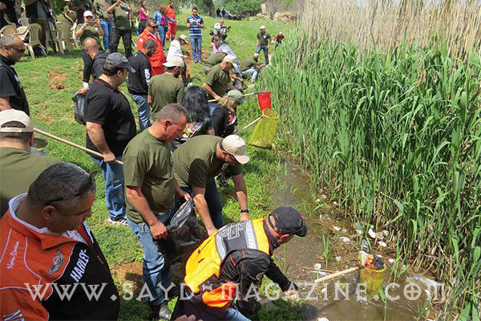
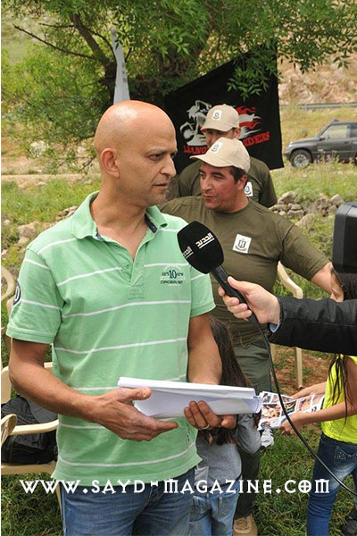
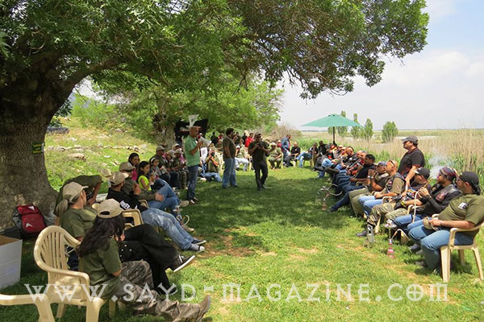
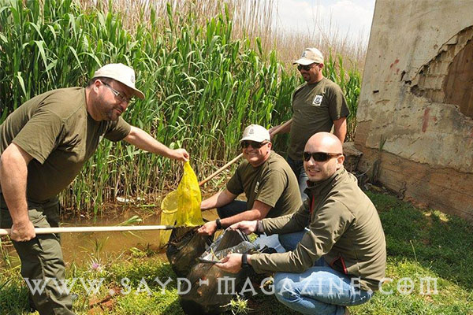
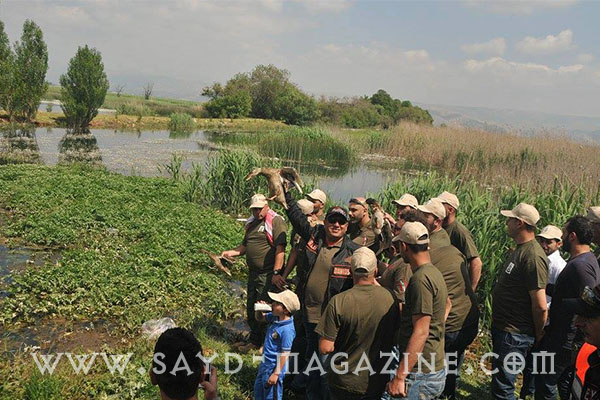
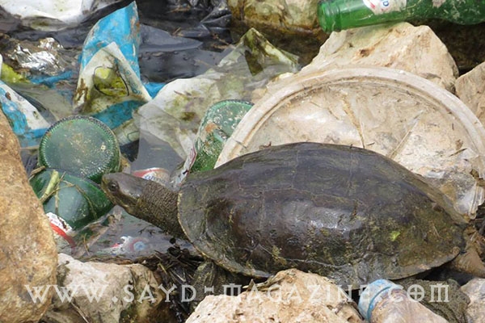
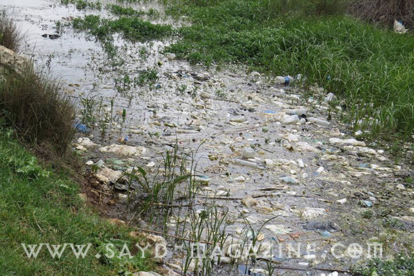
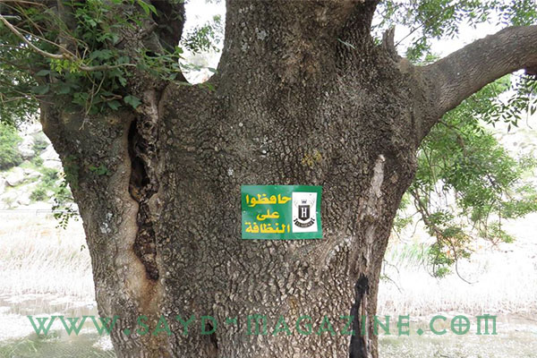

في إطار إستكمال الخطوات العملية التي أعلن عنها شفهيا في مناسبات عدة لأجل حماية الطبيعة والبيئة والطيور بيد صياديه، قام فريق EL HUNT الأحد 10-5-2015 بنشاط مميز دعا فيه اعضاءه ومحبي الطبيعة والصيد وبعض اهالي منطقة البقاع الغربي وفريق AIR RIFLE LEBANON و FRIENDS RIDERS LEBANON الى محميّة عمّيق في البقاع الغربي للفت الإنتباه الى مشكلة كبيرة متمثّلة بنفايات المتنزّهين التي تُهدِّد جزءاً مهماً من مستنقع عميق،والقيام بحملة رمزية للتنظيف في اطار تحضير مشروع حقيقي وفعال يحمي هذا المستنقع المهم للطيور،الذي وعلى مدى سنوات تراكمت أطنان من النفايات الصلبة في مياهه. افتتح اللقاء ماهر الأسطا (مدير قسم الصيد البرّي بمجلة "صيد" ومسؤول لجنة التدريب والتوعية في"مركز الشرق الأوسط للصيد المستدام")، بمحاضرة شرح خلالها أهمية مستنقع عمّيق الذي هو أهم المستنقعات في الشرق الأوسط، وعن الضرر الذي قد تُحدِثه النفايات الصلبة على الحياة البرية والمائية في هذا النظام الحيوي الحسّاس. وبعد المحاضرة قام الجميع بجمع أَكبر قَدر من النفايات، ووضعها بأكياس خاصة، للتخلص منها لاحقاً. وفي وقفةٍ لافتةٍ، لتعزيز نظرية: "أن الصياد هو البيئي الأول"، تبرّع عدد من صيادي البطّ في البقاع الغربي بطيورهم فأطلقوها في المحمية لتساهم بجلب الطيور البرية المهاجرة للاستراحة بأمان، بعد أن كانت سابقاً تُجْلَب فقط نحو فوهات البنادق لصيدها فقط. حضر هذا النشاط عدد من وسائل الاعلام الى جانب حضور رمزي لـ " صليب الأحمر اللبناني " وقد ادار هذه النشاط بحماسة وحرص عراب فريق EL HUNT رجل الأعمال ظافر النخلاوي، الذي أهدى هذا اليوم "لروح الشهيد البطل العقيد داني حرب، ابن المنطفة الذي استشهد دفاعاً عن تراب الوطن، هذا التراب الغالي الذي من المـُعيب أن نلوّثه بنفاياتنا". اختُتِمَ اللقاء بمأدبة غداء في الهواء الطلق وسط أحاديث وتأكيدات على ضرورة إستمرار العمل لحماية الطبيعة والبيئة.











